Das Haus
Ein Familienbetrieb am Waldrand von Kandersteg: die Familie Maeder führt das Haus seit 1976, Mitglied von Relais & Châteaux seit 2016. Gegenüber steht das Schwesterhaus, der Landgasthof Ruedihus.
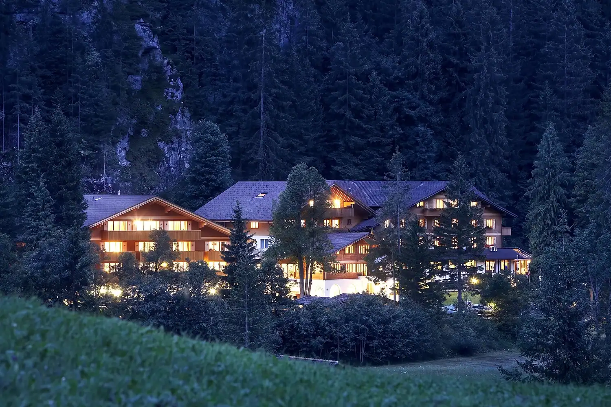
Die Marke des Hauses besteht aus wenigen Dingen, die immer gleich bleiben: die drei Tannen, das Nachtblau mit Papier und Gold, drei Schriften und die Tannen als Tapete. Alles andere zeigen die Fotos des Hauses.
- Echte Räume, Teller und Landschaften, gross und scharf
- Ruhige Sätze in der Sie-Form, Schweizer Schreibung
- Wenig, aber genau: eine Angabe statt eines Adjektivs
Die drei Tannen
Das Zeichen des Hauses, unverändert aus dem Hausmagazin Nr. 69 übernommen. Es steht gerade, ohne Rahmen, nie verzerrt, gedreht oder umgefärbt.
Das Logo
Das Logo des Drucks: die Tannen, «Waldhotel Doldenhorn», «Kandersteg» und vier Sterne. Es bleibt, wie es in der Datei steht; auf der neuen Website steht der Name daneben in Libre Caslon.
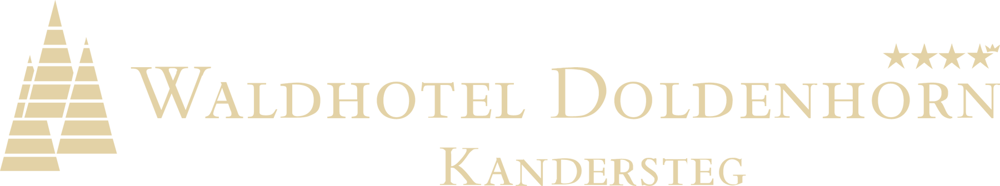
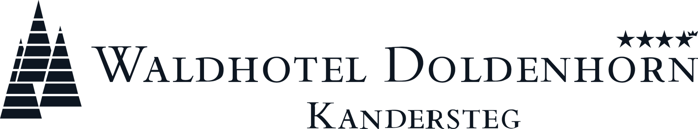
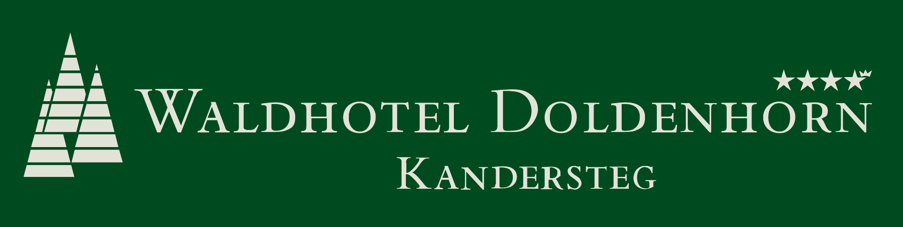
Nachtblau, Papier und Gold
Die Werte stehen nicht von Hand hier: sie kommen aus der Gestaltung der Website (assets/css/main.css) und aus dem Druck des Hauses.
Die Nacht
Das Nachtblau der heutigen Website des Hauses trägt die dunklen Flächen, immer mit den Tannen als Tapete.
#0D1621RGB 13 · 22 · 33Grund der Seite, Kopfleiste, dunkle AbschnitteGrundfarbe der heutigen Website des Hauses#070C14RGB 7 · 12 · 20dunkelster Grund: Fuss und Menüdunkelster Grund: Fuss, Menü#142235RGB 20 · 34 · 53zweite dunkle Fläche, Karten auf der Nachtzweite dunkle Fläche, aufgehellt aus dem NachtblauDas Papier
Drei warme Weiss aus der Tischwäsche des Au Gourmet. Hier wird gelesen.
#F1ECE2RGB 241 · 236 · 226helle Abschnitte, Grund der Werkzeugeaufgehellt aus der Tischwäsche des Au Gourmet (#c8c0b8)#FBF8F1RGB 251 · 248 · 241Karten, Blätter und Felder#D9D1C2RGB 217 · 209 · 194Linien und zweite helle FlächeDas Gold
Aus der Lilie von Relais & Châteaux in der Logo-Datei des Hauses. Zeichnet und betont, schreibt nie den Lesetext.
#E3D2A6RGB 227 · 210 · 166Betonung in Titeln und Zeichen auf DunkelBetonung in Titeln auf Dunkel#B89850RGB 184 · 152 · 80Linien, Zeichen und Punkte, TapeteLilie von Relais & Châteaux in der Logo-Datei des Hauses, gemessenTinte und Schiefer
Ein Schwarz mit Blau darin, nie reines Schwarz, und das Grau der Servietten im Au Gourmet.
#0F1620RGB 15 · 22 · 32Schrift auf hellen Flächen#384858RGB 56 · 72 · 88kleine FlächenServietten und Wände im Au Gourmet, gemessen#3D5370RGB 61 · 83 · 112kleine Marken und Angaben auf Hellkleine Marken auf HellAus dem Druck des Hauses
Die Farben, die das Haus heute auf Papier zeigt: Hausmagazin, Flyer, Gutschein. Das Grün gehört zum Logo im Druck, nicht zur Website.
#004A1FRGB 0 · 74 · 31Farbfläche der Druckdatei, Gutschein, Bistrokarte#481F00RGB 72 · 31 · 0Überschriften und Wortmarke im Magazin und auf den Flyern#E3E3D1RGB 227 · 227 · 209Innenseiten des Magazins, FlyerWo die Farben herkommen
Jeder Ton ist im Foto gesucht: die Stelle, deren Mittel ihm am nächsten liegt, mit dem Abstand nach CIEDE2000 (unter 5 gilt als gleich).
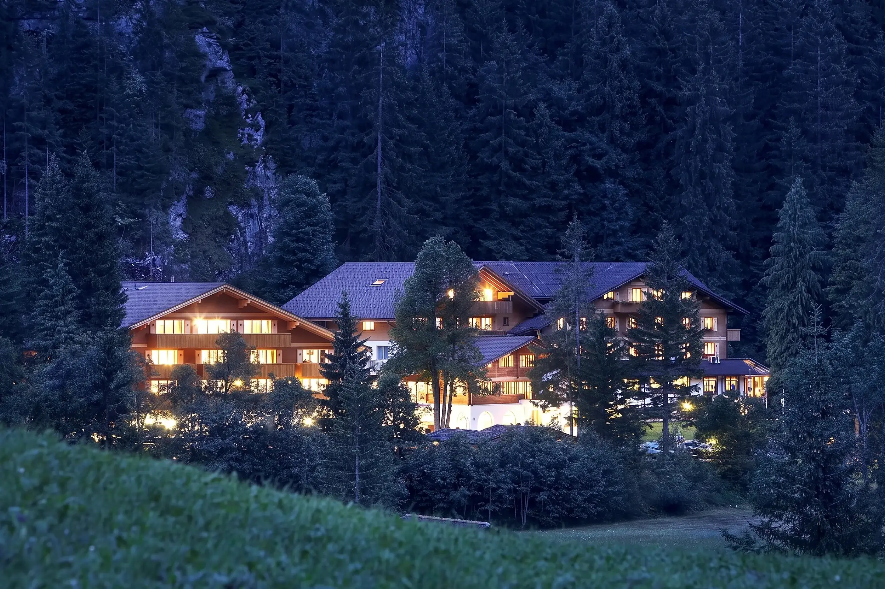
NachtTiefBlauDie Fenster leuchten, der Wald dahinter wird nachtblau. Daraus kommen Nacht, Tief und Blau.
- Nacht #0D1621im Foto gemessen #101E2D, Abstand ΔE 3,1
- Tief #070C14im Foto gemessen #17222E, Abstand ΔE 7,0
- Blau #142235im Foto gemessen #132234, Abstand ΔE 0,5
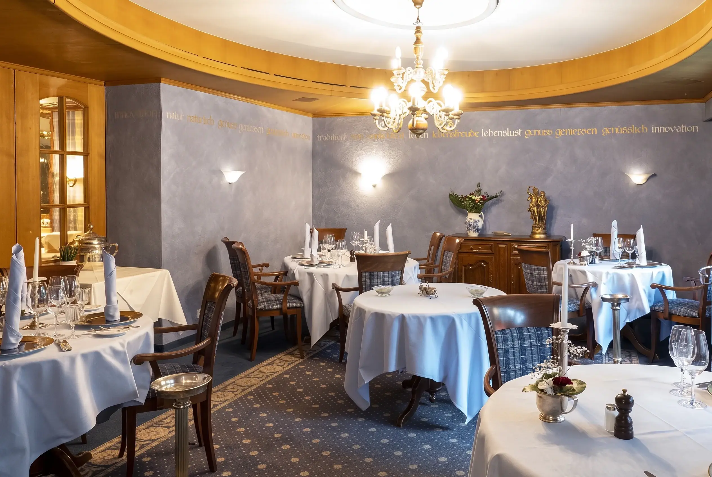
PapierBlattLeinenSchieferWeisse Tischwäsche, Leuchter und die Servietten im Saal. Daraus kommen Papier, Blatt, Leinen und Schiefer.
- Papier #F1ECE2im Foto gemessen #F3ECDF, Abstand ΔE 1,4
- Blatt #FBF8F1im Foto gemessen #FCF9F3, Abstand ΔE 0,5
- Leinen #D9D1C2im Foto gemessen #DED3C7, Abstand ΔE 2,1
- Schiefer #384858im Foto gemessen #3F4B5A, Abstand ΔE 2,0
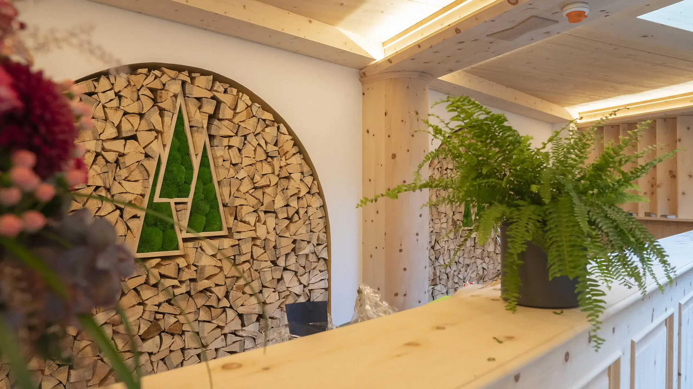
GoldHellgoldArvenholz und die drei Tannen an der Wand. Gold und Hellgold liegen im Holz und im Messing.
- Gold #B89850im Foto gemessen #B39450, Abstand ΔE 1,6
- Hellgold #E3D2A6im Foto gemessen #E7D0A0, Abstand ΔE 2,2
Was sich lesen lässt
- AaTinte auf PapierLesetext auf Papier · 15,4 : 1 · sehr gut, auch für langen Text
- AaBlatt auf NachtSchrift auf der Nacht · 17,2 : 1 · sehr gut, auch für langen Text
- AaHellgold auf NachtTitel und Zeichen auf der Nacht · 12,2 : 1 · sehr gut, auch für langen Text
- AaGold auf NachtLinien und Punkte auf der Nacht · 6,6 : 1 · gut für Lesetext
- AaStahl auf Papierkleine Angaben auf Papier · 6,7 : 1 · gut für Lesetext
- AaGold auf PapierGold auf Papier · 2,3 : 1 · nur Schmuck, nie Schrift
- AaBlatt auf BlauSchrift auf Blau · 15,1 : 1 · sehr gut, auch für langen Text
Drei Schriften
Libre Caslon für Titel, Instrument Sans für den Lesetext, DM Mono für kleine Angaben und Knöpfe. Keine anderen Schriften, keine Schreibschrift.
- Zu Gast – bei FreundenLibre CaslonGrosse Zeilen, Titel, Namen und Preise · fett 700, normale Schreibung
- Zimmer mit Balkon und AussichtInstrument SansLesetext · 400 bis 600, 19,4 px, Zeilenabstand 1,62
- Doldenhornstrasse 26 · 3718 KanderstegDM MonoKleine Angaben · 400, Versalien, 17 % gesperrt
- Zimmer buchenDM MonoKnöpfe · 500, Versalien, 17 % gesperrt
Die Tannen als Tapete
Die drei Tannen als Muster, Ton in Ton: Gold auf der Nacht, etwas kräftiger im Fuss, Stahl auf Papier. Nie ein freies Motiv.
Echte Bilder
Fotos zeigen, was der Gast vorfindet. Nie Schrift auf ein bewegtes Foto, nie ein erzeugtes Bild als ersten Eindruck, nie Gästefotos, nie hineinzoomen, bis es unscharf wird.
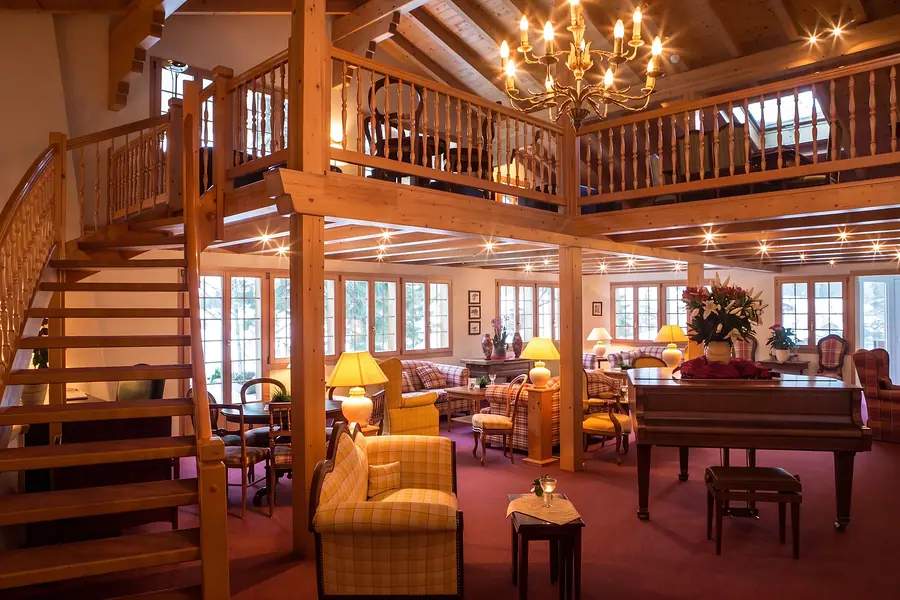
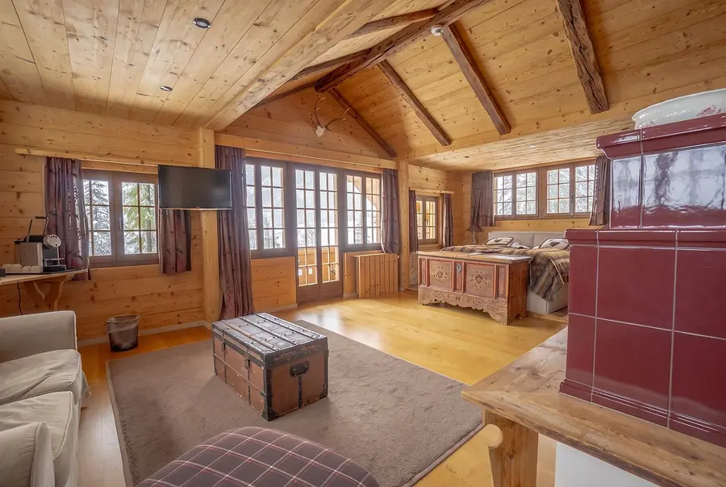
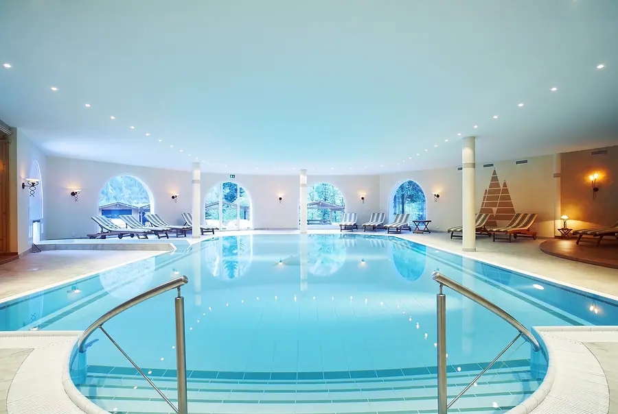
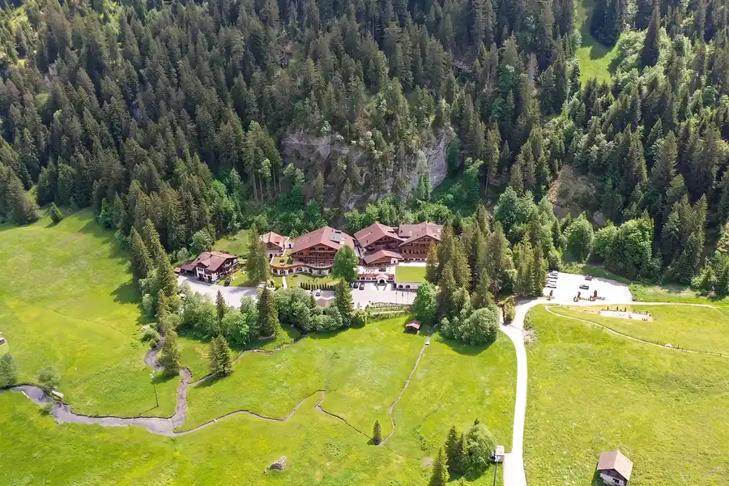
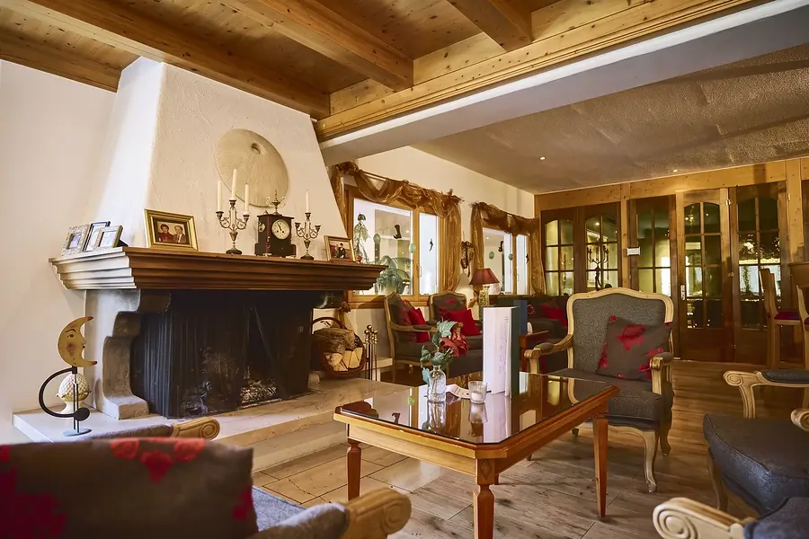
- Runde Ecken, weicher Schatten, keine Rahmenlinie
- Archivbilder in Schwarzweiss bleiben, wie sie sind
- Mit KI erzeugte Bilder nur als gekennzeichneter Platzhalter
- Licht und Schärfe dürfen nachgeschärft werden, der Inhalt bleibt
Der Ton
Ruhig, herzlich, konkret. Sie-Form, Schweizer Schreibung mit ss. Kurze Sätze, jedes Wort hat einen Zweck.
So
- Hallenbad, vier Saunas und ein Salzarium
- Zimmer mit Balkon und Aussicht
- Doldenhornstrasse 26 · 3718 Kandersteg
Nicht so
- Wellness pur!!!
- Das einzigartige Erlebnis in den Alpen
- Nur diese Woche, jetzt zugreifen